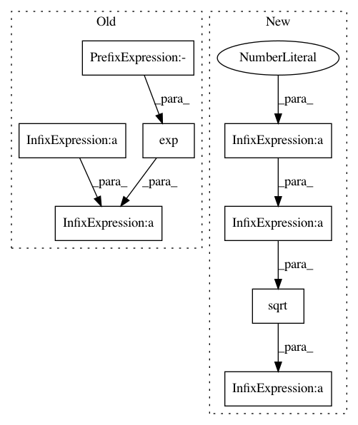

c0b94f051b458fdf27e41b2b4631421180b8883c,GPy/likelihoods/noise_models/noise_distributions.py,NoiseDistribution,_predictive_variance_numerical,#NoiseDistribution#Any#Any#Any#,335
Before Change
// E( V(Y_star|f_star) )
maximum = sp.optimize.fmin_ncg(self._nlog_exp_conditional_variance_scaled,x0=self._variance(mu),fprime=self._dnlog_exp_conditional_variance_dgp,fhess=self._d2nlog_exp_conditional_variance_dgp2,args=(mu,sigma),disp=False)
exp_var = np.exp(-self._nlog_exp_conditional_variance_scaled(maximum,mu,sigma))/(np.sqrt(self._d2nlog_exp_conditional_variance_dgp2(maximum,mu,sigma))*sigma)
pb.figure()
x = np.array([mu + step*sigma for step in np.linspace(-7,7,100)])
After Change
sigma2 = sigma**2
normalizer = np.sqrt(2*np.pi*sigma2)
// E( V(Y_star|f_star) )
//Compute expected value of variance
def int_var(f):
return self._variance(f)*np.exp(-(0.5/sigma2)*np.square(f - mu))
scaled_exp_variance, accuracy = quad(int_var, -np.inf, np.inf)
exp_var = scaled_exp_variance / normalizer
//V( E(Y_star|f_star) ) = E( E(Y_star|f_star)**2 ) - E( E(Y_star|f_star) )**2
if predictive_mean is None:
predictive_mean = self.predictive_mean(mu,sigma)
predictive_mean_sq = predictive_mean**2
def int_pred_mean_sq(f):
return predictive_mean_sq*np.exp(-(0.5/(sigma2))*np.square(f - mu))
scaled_exp_exp2, accuracy = quad(int_pred_mean_sq, -np.inf, np.inf)
exp_exp2 = scaled_exp_exp2 / normalizer
var_exp = exp_exp2 - predictive_mean**2
// V(Y_star | f_star) = E( V(Y_star|f_star) ) + V( E(Y_star|f_star) )
return exp_var + var_exp
In pattern: SUPERPATTERN
Frequency: 3
Non-data size: 8
Instances
Project Name: SheffieldML/GPy
Commit Name: c0b94f051b458fdf27e41b2b4631421180b8883c
Time: 2013-10-22
Author: alan.daniel.saul@gmail.com
File Name: GPy/likelihoods/noise_models/noise_distributions.py
Class Name: NoiseDistribution
Method Name: _predictive_variance_numerical
Project Name: SheffieldML/GPy
Commit Name: c0b94f051b458fdf27e41b2b4631421180b8883c
Time: 2013-10-22
Author: alan.daniel.saul@gmail.com
File Name: GPy/likelihoods/noise_models/noise_distributions.py
Class Name: NoiseDistribution
Method Name: _predictive_mean_numerical
Project Name: librosa/librosa
Commit Name: 4d8ad51ca476f476517dcee70f2209d7e7cc1404
Time: 2018-05-10
Author: brian.mcfee@nyu.edu
File Name: librosa/core/spectrum.py
Class Name:
Method Name: pcen